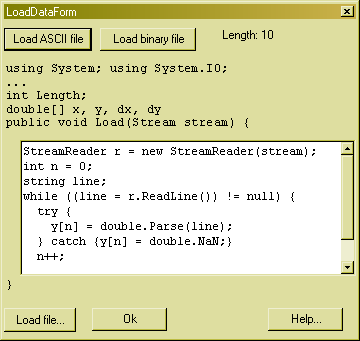

Load data from a file

In this window you can load measurement data from a file. In order to load the data, you need to specify C# code, that will load the data into the corresponding data-array. To help you a bit, there are two predefined codes, that will load an ASCII file or a 16-bit binary file into the y array. If you press the corresponding buttons, the source is filled in automatically. From within this code you can refer to the arrays x, y, dx and dy. You can also refer to the variable Length. Note that you do not have to initialize the arrays, their length is automatically adjusted upon access. Here is an example code, that reads semicolon separated ASCII data into the arrays x, y, dx and dy:
using (StreamReader r = new StreamReader(stream)) {
int n = 0;
string line;
string[] tokens;
char[] separator = ";".ToCharArray();
while ((line = r.ReadLine()) != null) {
tokens = line.Split(separator);
try {x[n] = double.Parse(tokens[0]);} catch {x[n] = 0;}
try {y[n] = double.Parse(tokens[1]);} catch {y[n] = 0;}
try {dx[n] = double.Parse(tokens[2]);} catch {dx[n] = 0;}
try {dy[n] = double.Parse(tokens[3]);} catch {dy[n] = 0;}
n++;
}
}